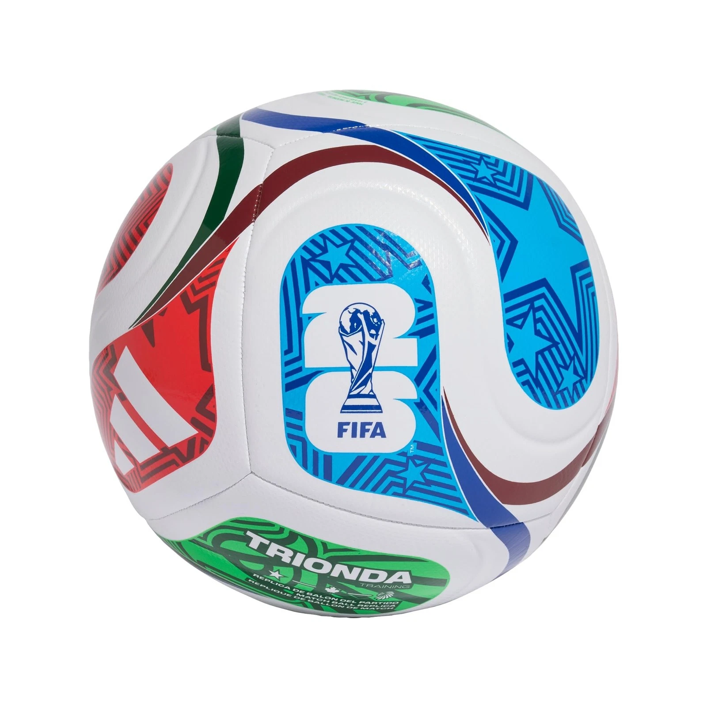

Curiosidades da Copa 2026
Página principal|O Brasil|Cidades-sede

A bola
A bola oficial do torneio se chama Adidas Trionda. Para as semifinais, a
disputa de terceiro lugar e a final, a FIFA lançou uma versão especial: a
trionda final, com as cores dourado, preto e vermelho e os nomes das
cidades-sede impessos nela.
Recordes desta edição
- Primeira copa com 38 seleções
- primeira copa com três países-sede
- Primeira copa com Show no intervalo da final
- Maior número de jogos da hitória : 104 partidas
Surpresas do torneio
- A Noruegaeliminou o Brasil e terminou em 5ª—sua melhor
campanha em quatro Copas.
- O Marrocos foi novamente a melhor seleção africana, eliminado pela primeira vez desde
França nas quartas
- A México, país-sede venceu um mata-mata pela primeira vez desde 1986
- A Suíçavoltou a vencer um jogo eliminatório depois de 88 anos
Com 48 seleções, a Copa de 2026 deu chance a países qie nunca
haviam disputado o torneio — e alguns deles surpreenderam os
favoritos.
Fonte: site oficial da FIFA.
Página produzida na aula de programação web — Semana 2